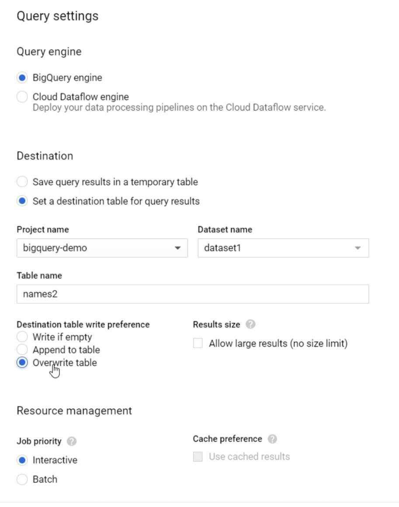

Manual operations on Table
Changing column names
Can be done by writing a query where setting aliases for the new columns
SELECT * EXCEPT(name_to_change),
name_to_change as new_name
FROM table_name
Then select query settings

Changing datatype
By using a query where we cast the desired column to the desired data type.
NB: Some types can't be directly casted
SELECT * EXCEPT(col_to_change),
CAST(col_to_change as TYPE) as col_to_change
FROM table_name
Then use the same query settings as [[#Changing column names]].
Deleting column
SELECT * EXCEPT(col_to_remove),
FROM table_name
Then use the same query settings as [[#Changing column names]].
Changing column mode
Using cloud storage to save the old table and creating a new one, then restoring.
Getting old table values
You can get a table value from the last 7 days.
Here's an example:
select *
FROM table_name FOR SYSTEM_TIME AS OF TIMESTAMP_SUB(CURRENT_TIMESTAMP(), INTERVAL 1 HOUR)
then, by "query settings" you can save it wherever you want.